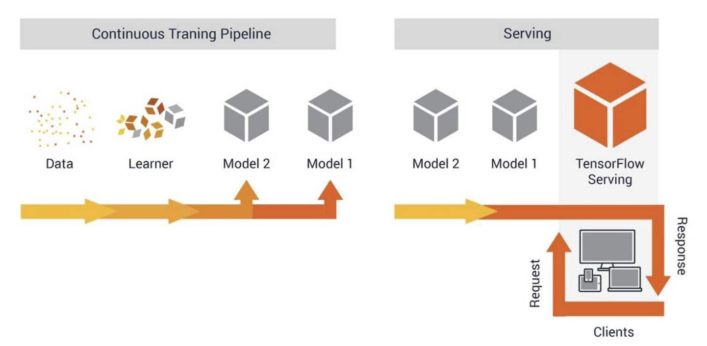

Docker deployment
The Docker daemon uses the HTTP_PROXY, HTTPS_PROXY, and NO_PROXY environmental variables in its start-up environment to configure HTTP or HTTPS proxy behavior. If your compant use a proxy, you need to change the setting of proxy in docker.
edit the http-proxy.conf
1
2
3nano /etc/systemd/system/docker.service.d/http-proxy.conf
[Service]
Environment="HTTP_PROXY=http://ip:port"edit daemon.json
1 | sudo nano /etc/docker/daemon.json |
sudo systemctl daemon-reload
sudo systemctl restart docker
if not work
- check the version of docker
- downgrade the version to
TFserving
Once we have our Tensorflow or Keras based model trained, we needs to think on how to use it in, deploy it in production. we may want to Dockerize it as a micro-service, implementing a custom GRPC (or REST- or not) interface. Then deploy this to server or Kubernetes cluster and have other client micro-services calling it. Google Tensorflow Serving library helps here, to save our model to disk, and then load and serve a GRPC or RESTful interface to interact with it.

Deploy docker environment of TFserving
1 | docker pull tensorflow/serving |
download example code
1 | mkdir -p /tmp/tfserving |
RESTful API
- run TFserving
1 | docker run -p 8501:8501 \ |
- run Client
1 | curl -d '{"instances": [1.0, 2.0, 5.0]}' \ |
- result
1 | { "predictions": [2.5, 3.0, 4.5] } |
gPRC API
- run a mnist model and save the model
1 | python3 mnist_saved_model.py models/mnist |
source code
- rain a model
- Save the model we have trained
1 | from __future__ import print_function |
- run client
1 | pip3 install tensorflow-serving-api |
1 | python3 mnist_client.py --num_tests=1000 --server=127.0.0.1:8500 |
- result
1 | Inference error rate: 11.13% |
Client source code
1 | from __future__ import print_function |